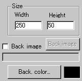
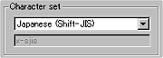

|
This applet is a simple text scroller, the function
of which is utilised in most Anfy applets, but for those who only
want text scroll function, we have separated the function and made
it an independent applet.
Since, we have already added the textscroll menu
to the existing Anfy wizard, there isn't much to see in the textscroller
specific menu which I'm going to explain in a minute below.
[For more technical
information about the available parameters, click here.]
Most parameters are self-explanatory and you can
always see brief description of each parameter by moving the mouse
pointer over the wizard.
 |
First of all, define the applet size "Width",
"Height" and set either the background colour
or the background image.
Since the ver 1.4, the tree items can be named
with non-English fonts. To achieve this, you need to select
your desired character set at the "character set"
parameter box.
|
 |
In the example shown left, Japanese
(Shift-JIS) is selected. Then, appropriate code will be added
in the final document within a <meta> tag. |
We currently provide the following list of character
sets, but if you manually edit <meta> tag, you should be able
to use others too.
|
Arabic (ISO) iso-8859-6
Arabic (Windows) windows-1256
Baltic (ISO) iso-8859-4
Baltic (Windows) windows-1257
Chinese (Traditional) big5
Chinese (Simplified) gb2312
Chinese (Simplified HZ) hz-gb-2312
Cyrillic (ISO) iso-8859-5
Cyrillic (Windows) windows-1251
European (Central, ISO) iso-8859-2
European (Central, Windows) windows-1250
European (Western, ISO) <-- default iso-8859-1
Greek (ISO) iso-8859-7
Greek (Windows) windows-1253
Hebrew (ISO) iso-8859-8
Hebrew (Windows) windows-1255
Japanese (Shift-JIS) x-sjis
Japanese (JIS) iso-2022-jp
Japanese (EUC) x-euc-jp
Korean (ISO) iso-2022-kr
Korean (euc-kr) euc-kr
Latin 3 (ISO) iso-8859-3
Thai (ISO) iso-8859-11
Thai (Windows) windows-874
Turkish (ISO) iso-8859-9
Turkish (Windows) windows-1254
Ukrainian (KOI8-RU) koi8-ru
Vietnamese (Windows) windows-1258
|
Those who use non-English (non-Latin) fonts should
know how to handle non-Latin fonts in HTML. For example, you add
in the <head></head> tag,
<meta http-equiv="content-type"
content="text/html; charset=iso-8859-1">
if Latin fonts are used. However, in the case of
Latin fonts, most people tend to use default character set and may
not explicitly state this. The wizard automatically outputs this
tag for you!
Press "Next" button and proceed
your editing on the text scroll menu,
then go to the expert menu.
|